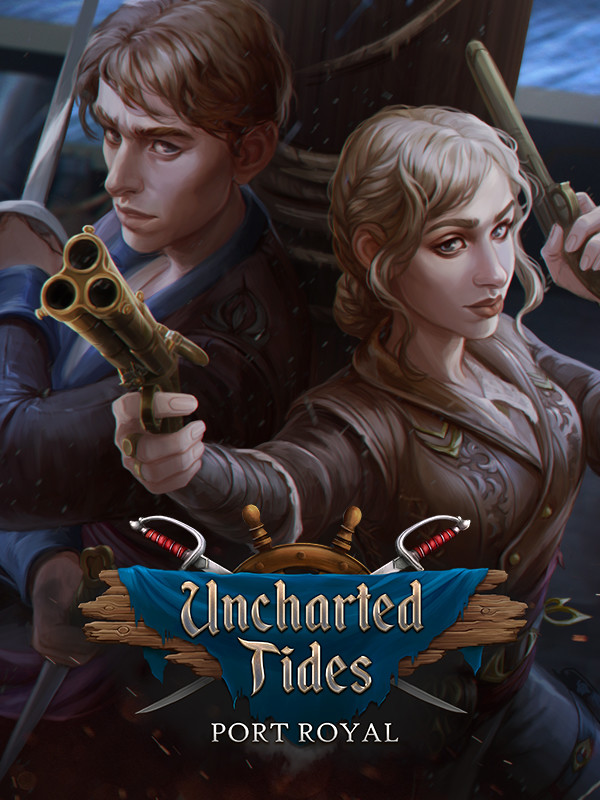

Uncharted Tides: Port Royal
Uncharted Tides: Port Royal
Details
|  | |
| Playtime | Not Played |
| Last Activity | Never |
| Added | 12/30/2023 6:40:47 |
| Modified | 12/31/2023 8:35:19 |
| Completion Status | Not Played |
| Library | Steam |
| Source | Steam |
| Platform | PC (Windows) |
| Release Date | 9/29/2019 |
| Community Score | 70 |
| Critic Score | |
| User Score | |
| Genre | Adventure Point-and-click Puzzle |
| Developer | Artifex Mundi Cordelia Games |
| Publisher | Artifex Mundi |
| Feature | Single Player |
| Links | Official Steam Twitch |
| Tag | |
Description
Mason Owens is missing for decades, and yet his oldest friend sent you a message saying that he can help track him down. The last thing your father was looking for, before he disappeared, was a preternatural ship called the Cursed Rose. However, all is not as it seems... and quickly the search turns into a swashbuckling pirate adventure, as you sail on the Uncharted Tides!
Avast Ye! Immerse into this seaworthy adventure playing the game from two different perspectives. Explore the mysteries of Cursed Rose both as Mary Jane - swashbuckling daughter of a famous captain and Jack - nimble thief with a heart of gold.
Figure out what famous sailor, Mason Owens, was looking for, what daring adventures did he live through and why did he leave his daughter behind.
Find the legendary, magical ship which name is being whispered only by the bravest. The Cursed Rose. A Man-O-War that every pirate in the Caribbean wants for himself. Arrr you ready?

Avast Ye! Immerse into this seaworthy adventure playing the game from two different perspectives. Explore the mysteries of Cursed Rose both as Mary Jane - swashbuckling daughter of a famous captain and Jack - nimble thief with a heart of gold.
Figure out what famous sailor, Mason Owens, was looking for, what daring adventures did he live through and why did he leave his daughter behind.
Find the legendary, magical ship which name is being whispered only by the bravest. The Cursed Rose. A Man-O-War that every pirate in the Caribbean wants for himself. Arrr you ready?
Features
- Play as Mary Jane - the daring sailor and Jack - the honorable thief!
- Use your magic compass to solve 20 seadog puzzles and get the booty!
- Overcome any obstacles with your trusty lockpick!
- Explore 55 Caribbean locations in search for the legendary ship!
- Play an additional adventure - "Troubled Waters"!